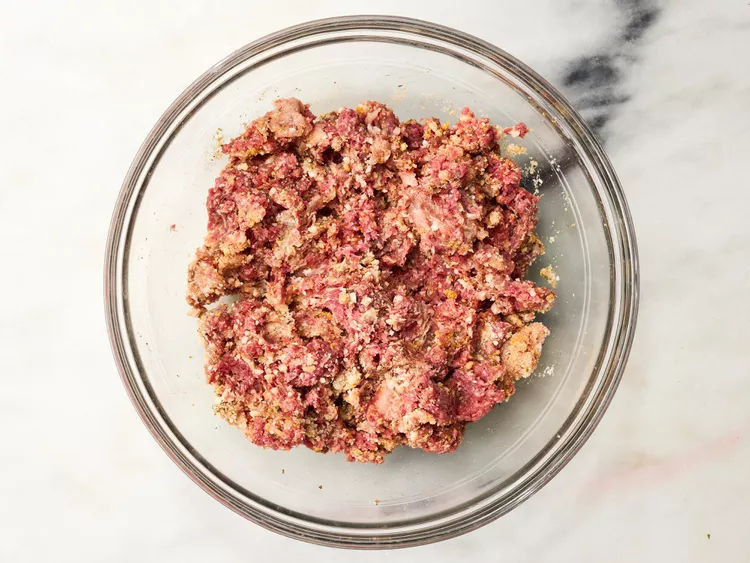
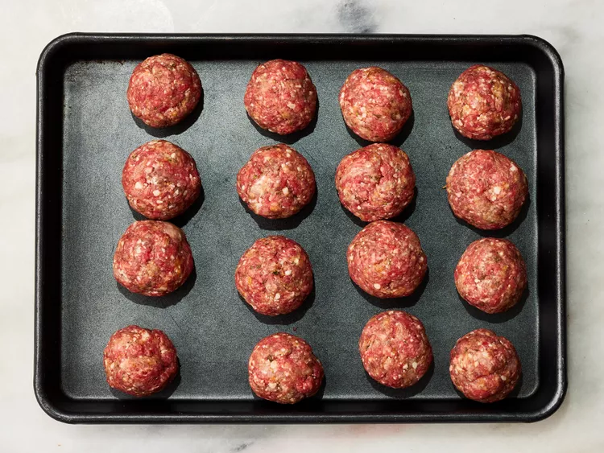
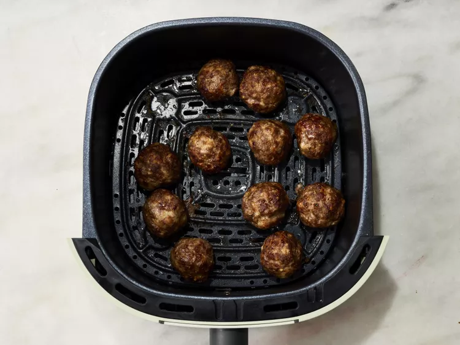

Air Fryer Meatballs

Enjoy flavorful and perfectly cooked meatballs with this quick and easy Air Fryer Meatballs recipe. Ground meat, breadcrumbs, seasonings, and your favorite herbs come together to create bite-sized delights. The air fryer ensures a crispy exterior while keeping the inside juicy and tender. Say goodbye to excess oil without sacrificing taste! Serve these air-fried meatballs as appetizers, alongside pasta, or in a sub for a delightful meal that's sure to please your taste buds. This recipe offers a convenient and healthier twist on a classic favorite.
Ingredients
- 16 ounces lean ground beef
- 4 ounces ground pork
- ½ cup grated Parmesan cheese
- ⅓ cup Italian seasoned bread crumbs
- 1 egg
- 2 cloves garlic, minced
- 1 teaspoon Italian seasoning
- ½ teaspoon salt
Instructions:
- Step 1
Preheat an air fryer to 350 degrees F (175 degrees C). - Step 2
Combine beef, pork, Parmesan cheese, bread crumbs, egg, garlic, Italian seasoning, and salt in a large bowl. Mix until evenly combined. - Step 3
Form into 16 equal meatballs (a small ice cream scoop is helpful) and place on a baking sheet. - Step 4
Place 1/2 of the meatballs in the basket of the air fryer and cook 8 minutes. Shake the basket and cook 2 minutes more. Transfer to a serving plate and let rest for 5 minutes. Repeat with remaining meatballs. - Step 5
Serve warm and enjoy!


